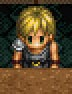

(Complete)
(ETERNAL)
ちなみにブルドーの息子。
息子のダニーがシェリルと一緒に町を出ていったのを知り厳しくしかったらしい。
嵐の結界が出現してからは、愚痴ばかりこぼし、特に何もしていないらしい。

夫と違い、町のために何かしようと考えている。
(Complete)
(ETERNAL)
目次 > ゲームについて > 日本Falcom 攻略 > Ys > キャラクター一覧 > バルバドの港町
らんの眼
Ys(イース) Ys Eternal(VE)/Ys Complete
| 概要 | 情報 | ボス戦 |
| 敵キャラ一覧 | アイテム一覧 | 攻略チャート |
| 地図 | ダウンロード | イースの本 |
| 経験値表 | 地名一覧 | タイムアタック |
| ETERNAL / Complete 比較 | キャラクター一覧 | |
| Ys 攻略へ | 目次へ戻る |
| [ バルバド ] [ ミネア ] [ ゼピック ] [ その他 ] |
| 名前 (Complete) |
名前 (ETERNAL) |
画像 | 備考 |
| ブルドー | ブルドー | バルバドの港町にある病院の医者。リーボルに襲われけがをしたアドルを治療した。 | |
| アイラ | 看護婦 | ブルドーの病院につとめる看護婦さん。個人的にすごく看病してもらいたいです。 | |
| スラフ | スラフ | バルバドの自警団の団長で、リーボルに襲われたアドルを保護した。その後、何かとアドルに協力してくれる。 ちなみにブルドーの息子。 |
|
| ゲオルグ老人 | 老人 | 若い頃にサルモン神殿へ行ったことがあり、女神像の美しさは今でも鮮明に覚えているらしい。 | |
| トランス | 男の人 | 魔物が怖く、ミネアの町へ行ったアドルに対して驚いた。 | |
| レベッカ | 女の人 | トランスの妻。 息子のダニーがシェリルと一緒に町を出ていったのを知り厳しくしかったらしい。 |
|
| 貿易商メイソン | 貿易商 | ミネアの町のピムと同じ時期にエステリアにやってきた貿易商。 嵐の結界が出現してからは、愚痴ばかりこぼし、特に何もしていないらしい。 |
|
| シルビア | 貿易商婦人 | |
貿易商メイソンの妻。 夫と違い、町のために何かしようと考えている。 |
| 漁師ペテロ | 男の人 | このまま元の漁村に戻ってもいいのでは? と思っている。 | |
| ドレイク | 自警団の若者 | ゲームを進めると、何かの用事でミネアの町に行き、それ以降はなぜか酒場に入り浸り。 | |
| ジェイコブ | 自警団の若者 | 自警団の詰め所の屋上で監視役を務める。 | |
| 名前 (Complete) |
名前 (ETERNAL) |
画像 | 備考 |
| 名前 (Complete) |
名前 (ETERNAL) |
画像 | 備考 |
| ダニー | 男の子 | トランスの息子で、隣の家のシェリルと仲良し。 将来は自警団に入団希望らしい。 |
|
| シェリル | 女の子 | 貿易商メイソンの娘で、隣の家のダニーと仲良し。 外で遊べないことを不満に思っている。 |
|
| ジェラルド | 酒場の主人 |  | バルバドの港町にある酒場の主人。 最近はお客がこないのでとても暇らしい。 |
| カリン | ウェイトレス | 酒場にいるウェイトレス。 最近はお客がほとんど来ず、自警団に入ろうとするがスラフに断られる。 16 歳で、エステリアより北にある国の出身。 |
|
| マルコ | 若者 | 嵐の結界のせいで、今後の貿易計画が大幅に狂ってしまったらしい。 | |
| ダリア婆さん | 老婆 | ミネアの町に息子が住んでおり、そちらに来るように勧めてくるらしいが、かたくなにバルバドから離れようとしない。 しかし、ミネアの町にいる孫のことはいつも心配している。 |
|
| フラン | 女の人 | 嵐の結界の原因に興味津々。 | |
| ステファン | 自警団の若者 | ラスティン村の用に滅ぼされるくらいならば、ミネアに移住すればいいと思っている。 | |
| アーシア | 女の人 | 自警団の効果については疑問視しているが、内心は頼りにしている様子。 | |
| パストル老人 | 牧場主 | ピッガードを飼っている老人。 | |
| 名前 (Complete) |
名前 (ETERNAL) |
画像 | 備考 |
| [ バルバド ] [ ミネア ] [ ゼピック ] [ その他 ] |
| 概要 | 情報 | ボス戦 |
| 敵キャラ一覧 | アイテム一覧 | 攻略チャート |
| 地図 | ダウンロード | イースの本 |
| 経験値表 | 地名一覧 | タイムアタック |
| ETERNAL / Complete 比較 | キャラクター一覧 | |
| ページの上部へ | Ys 攻略へ | 目次へ戻る |